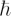
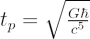
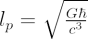

The Planck time is the fundamental unit of time in the system of Planck Units. It has the value:
tp = 5.39 × 10-44 s
In SI units, measurements of time are made in seconds (usually given the symbol s). Although using seconds is convenient for everyday life, such as measuring the time it takes for an athlete to sprint 100 metres or the duration of a phone call, it becomes less practical when we discuss the sequence of events that happened in the very early Universe (such as the onset of inflation that occurred 10-35s after the Big Bang).
A consequence of using seconds to measure time is that the fundamental constants take on values that are not always convenient for including in equations:
| Speed of light | c = 299792458 m s-1 |
| Gravitational constant | G = 6.673(10) x 10-11 m3 kg-1s-2 |
| Plank’s constant (reduced) |  = h/2π = 1.054571596(82) x 10-34 kg m2 s-1 |
| Boltzmann constant | k = 1.3806502(24) x 10-23kg m2 s-2K-1 |
The Planck time is derived dimensionally using combinations of these fundamental constants:

By redefining the base units for length, mass and time in terms of the Planck units, the fundamental constants have the values: c = G = ħ = k = 1.
The Planck time is the time it takes for a photon to travel a distance equal to the Planck length:

= 1.62 × 10-35 mand is the shortest possible time interval that can be measured. With its associated Planck length, the Planck time defines the scale at which current physical theories fail. On this scale, the entire geometry of spacetime as predicted by general relativity breaks down. Consequently, on such scales, an as yet undiscovered theory that combines general relativity and quantum mechanics is needed to describe the laws of physics. For this reason, our current descriptions of the early evolution of the Universe start at tp = 5.39 × 10-44 seconds after the Big Bang.